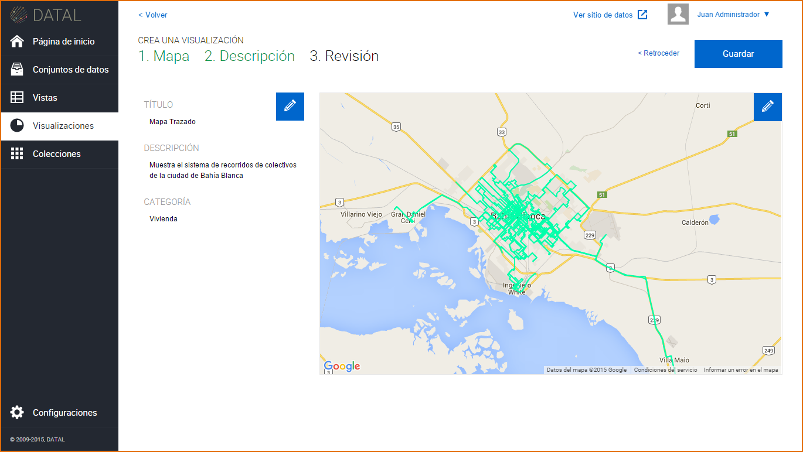

7. Creación de una Visualización¶
Acceso directo desde:
Posicionarse sobre el botón → Visualizaciones
Seleccione la opción → Nueva
Otra opción para poder acceder es:
Ingrese a la sección → Visualizaciones
Presione el botón → Nueva visualización
Seleccione la Vista del cual desea crear una Visualización →
El sistema muestra la siguiente pantalla con los tipos de gráficos para la creación de una Visualización. Haga click sobre el tipo de Gráfico o Mapa que desea generar y luego seleccione un gráfico específico, estos pueden ser:
Gráfico: De línea, de barras, de área, de columna y de torta.
Mapas: Marcadores y Trazados.
Una vez seleccionado el tipo de gráfico, el sistema muestra la siguiente pantalla según sea Gráficos o Mapas.
Haga clic sobre el botón en la sección que lee “Seleccione los datos que desea representar”, luego seleccione los datos (columnas) de la tabla de datos, estos son:
Gráficos: Intervalos con datos (eje Y), etiquetas (eje X) y encabezado o nombre del gráfico.
Mapas → Marcadores: Latitud, Longitud e información de Marcadores, los marcadores son los nombres de los distintos puntos graficados en el mapa.
Mapas → Trazados : Información de Trazado e información de marcadores
Una vez seleccionados los datos de la tabla, presione el botón Graficar.
El sistema muestra el gráfico con los datos seleccionados de la tabla de datos. Puede cambiar de gráfico haciendo click sobre los diferentes tipos de gráficos que se muestran en el margen izquierdo de la pantalla.
Creado el gráfico, presione el botón Continuar.
El sistema muestra la siguiente pantalla, complete los campos requeridos (*), pudiendo omitirse el campo de Notas. Luego de completar los campos requeridos, presione el botón Continuar y luego el botón Guardar. La Visualización se crea por defecto en estatus de Borrador.
El sistema muestra el gráfico con la información del mismo.
También puede crear una Visualización editando una Vista, vaya a la sección de Vistas, haga click sobre una Vista y presione el botón Crear Visualización.
7.1 Edición de una Visualización¶
Antes de Guardar la Visualización o sea antes de presionar el botón Guardar, puede editar el gráfico presionando el botón  , esta acción le permite seleccionar nuevamente los datos a graficar. También puede editar la información de la Visualización presionado el ubicado el margen izquierdo de la pantalla.
, esta acción le permite seleccionar nuevamente los datos a graficar. También puede editar la información de la Visualización presionado el ubicado el margen izquierdo de la pantalla.
Una vez creada la Visualización, se muestra la misma en un listado, este listado cuenta con una paginación, es decir que se puede ir avanzando página por página dentro del listado. Para esto se dirige a la sección → Visualizaciones
Para editar una Visualización, hay dos opciones:
Clic sobre la Visualización: El sistema muestra el gráfico más la información del mismo: Título del gráfico, Estatus, Fecha de Creación, Descripción, Categoría y Nota, presione
 , e introduzca los cambios sobre la información como así también sobre el contenido de la Visualización.
, e introduzca los cambios sobre la información como así también sobre el contenido de la Visualización.Acercar el mouse sobre la Visualización: Se muestra las siguientes opciones:
- Editar: Al hacer click sobre este botón puede realizar cambios a la información de la Visualización.
- Borrar: Al hacer click sobre este botón puede borrar los cambios recientes de la Visualización o todos los cambios de la Visualización.
- Ver vista: Al hacer click sobre este botón puede acceder a la Vista asociada.
Cuando la Visualización se encuentra en Revisión:
Los usuarios con rol de Editor pueden enviar la Visualización a Revisión, la Visualización en este estatus no puede ser editada, su opción de Editar solo es posible cuando el recurso es Aceptado o Rechazado.
Los usuarios con rol de Publicador o Administrador podrán Aceptar o Rechazar el recurso para luego publicarlo.
7.2 Publicación de una Visualización¶
Para publicar una Visualización, la Vista y el Conjunto de Datos asociados deben estar previamente Publicados. En el caso que la Visualización esté en Revisión, esta deberá ser Aceptada para posteriormente ser Publicada, haga click sobre el botón Publicar.
Para acceder al portal de datos abiertos y ver la Visualización publicada  , haga clic sobre
, haga clic sobre  , en el margen superior derecho.
, en el margen superior derecho.

7.3 Eliminación de una Visualización¶
Para eliminar una Visualización, hay dos opciones:
- Dentro de la Visualización, clic sobre

- En el listado de Visualizaciones, seleccione una Visualización y presione el Botón

La Plataforma permite eliminar la revisión actual de la Visualización o todas las revisiones de la Visualización. Esta última acción elimina la Visualización, como así también lo elimina del portal de datos abiertos. Por Revisión se entienden los distintos cambios realizados sobre la información de la Visualización.

Si la Visualización se encuentra con estatus de Revisión, no podrá ser eliminada de la plataforma.